Andrea Vitaletti
Projects will be continuously evaluated
All material, namely Project Idea, Code, PoC, Presentation etc. will be available on a github repo communcated by the groups to the organizers.
The REDAME will provide all the necessary information to access the material and run the tests.
Projects have to be submitted to the Algorand Developers Portal
| Clarity of the specifications of the smart contract (e.g. functionalities, roles etc) including use cases | 10 |
| Clarity of the technical challenges in implementing and deploying the smart contract | 10 |
| Analysis of the state of the art of “similar” or relevant solutions | 10 |
| Proof-of-concept publicly available in a testnet and evidences that your smart contracts work as expected (e.g. reference to relevant transactions, tests) | 35 |
| Code on github with a well documented README. Note that code quality will be evaluated in terms of simplicity, clarity and comments as well as good practice in code development (e.g. guidlines). | 35 |
| Qualitative discussion on the security and correctness of the developed smart contracts | 5 |
| Discussion of potential business benefits | 5 |
# Group
# Goal of the Project
Problem, Solution (Be focused!)
# Smart Contract Specifications
Requirements, Use cases, Functions ...
# State of the Art
Relevant Smart Contracts, Papers
Posts in the developer portal ...
# Technical Challenges
Beyond the state of the art
# PoC
# How to test the PoC
Procedure, metrics (e.g. fees, limits on memory, minimum balance),
KPI (e.g. fee < X), functions ...
# Bonus Arguments
Awards will be granted once projects are submitted to the Algorand Developers Portal
The amounts of the awards per group are the following (before taxes):
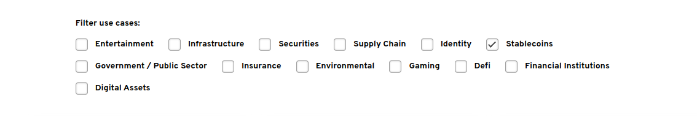
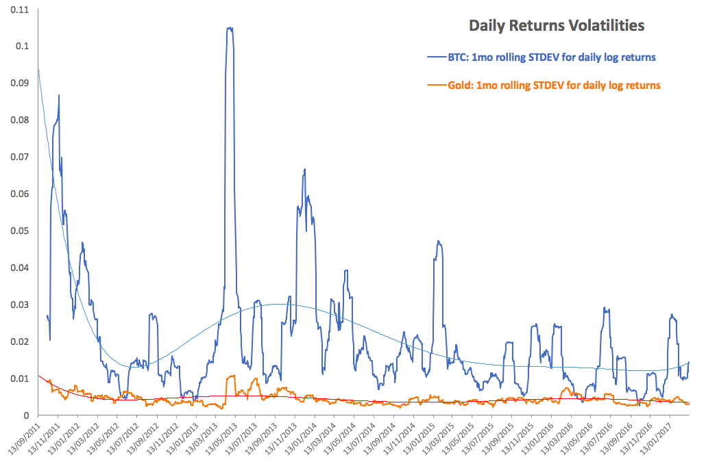
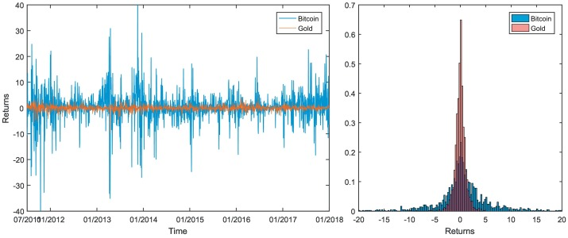
We conclude that Bitcoin and Gold feature fundamentally different properties as assets and linkages to equity markets. Our results hold for the broad cryptocurrency index CRIX. As of now, Bitcoin does not reflect any distinctive properties of Gold other than asymmetric response in variance.
(Klein et al., 2018)
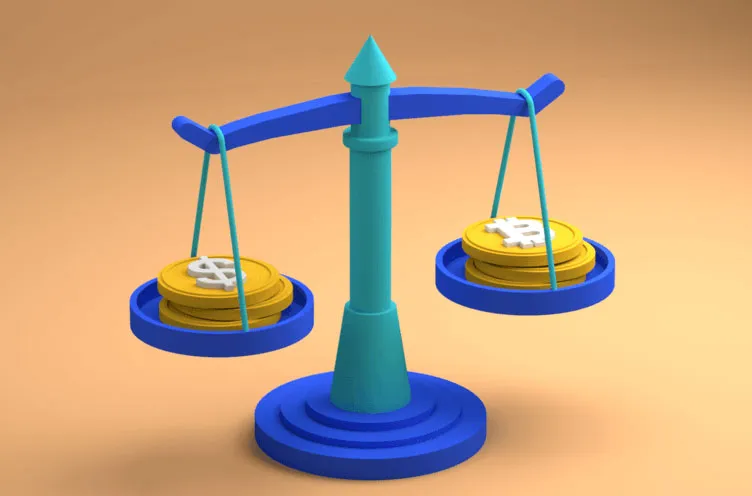
A stablecoin is a digital currency that is pegged to a “stable” reserve asset like the U.S. dollar or gold.
Cryptocurrencies – similar to all assets in the market, such as houses or stocks – move up and down in price depending on the market demand and the supply of the asset.
To prevent the price of a stablecoin depegging – moving away from the reference (e.g. $1) – while subject to market conditions, algorithms regulate supply and demand.
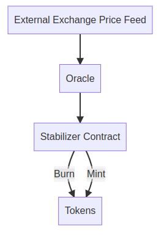
The stabilizer computes the amount of tokens to be burned and minted from every users wallet.
If price of the coin is greater than the fiat currency, it burns tokens, it mints token otherwise.
A carbon credit is a tradable certificate representing the right to emit a set amount of pollutant.
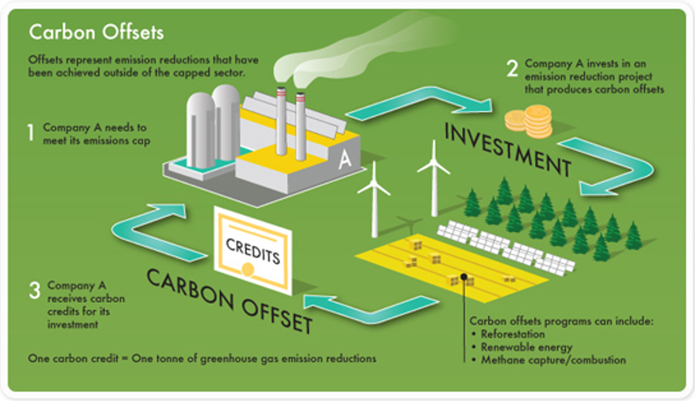
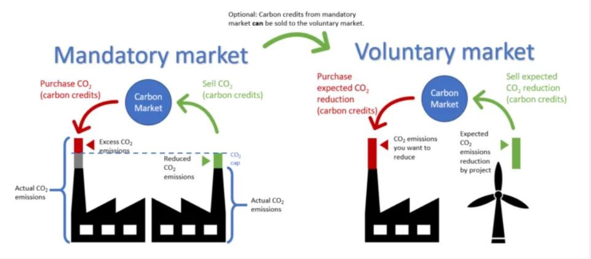
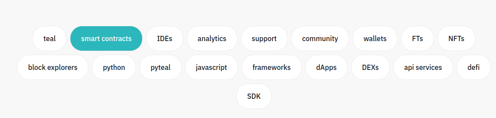
A way for developers to learn fundamental and advanced skills by actually coding. You’ll modify incomplete code snippets that perform key Algorand tasks …
… even because at the end you have to publish there!
Smart signatures are limited, current smart contracts are very powerful
Consider auctions for example (Mogavero et al., 2021)
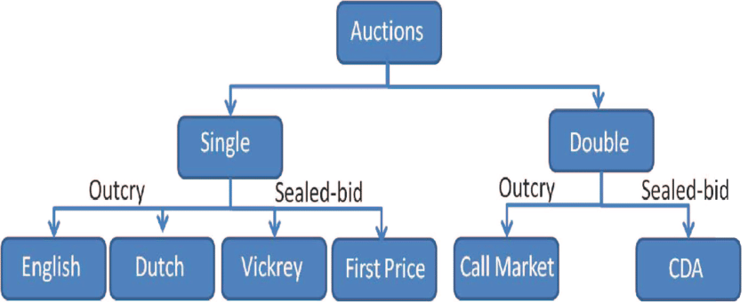
Can we implement all these?
Bids are simply written (i.e., notarized) on the blockchain as soon as they are issued.
The winning bidder will obtain the asset in exchange for the amount of cryptocurrency deposited at bidding phase.
This auction allows private bidding for sealed-bids auctions.
In this auction, the winner is privately computed without revealing the offers of the other bidders. Each bidder reveals his/her bid only to the auctioneer, who exploits this information to compute and publicly declare the winner.
Key ingredients (rows) to implement the proposed auctions (columns) (Mogavero et al., 2021)
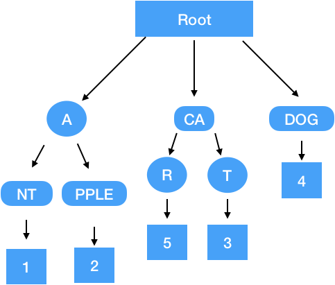
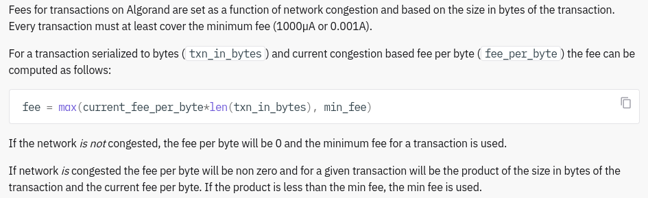
curl -X 'GET' \
'https://node.algoexplorerapi.io/v2/transactions/params' \
-H 'accept: application/json'
{
"consensus-version": "https://github.com/algorandfoundation/specs/tree/433d8e9a7274b6fca703d91213e05c7e6a589e69",
"fee": 0,
"genesis-hash": "wGHE2Pwdvd7S12BL5FaOP20EGYesN73ktiC1qzkkit8=",
"genesis-id": "mainnet-v1.0",
"last-round": 23632437,
"min-fee": 1000
}
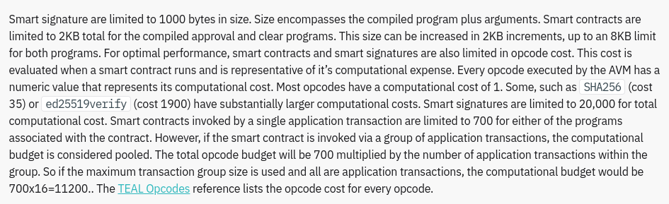
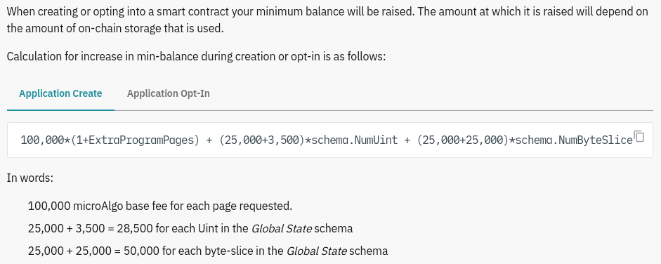